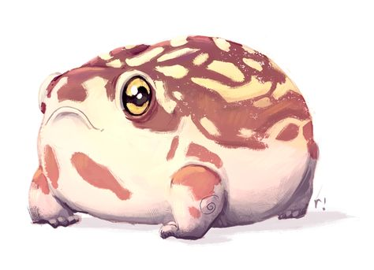

Лягушки и жабы

Интересные факты про лягушек
- Уникальное зрение: они могут одновременно смотреть вверх, вперёд и вбок.
- Уникальная система дыхания: в воде лягушки дышат кожей, на суше — лёгкими и ртом.
- Слух: на суше лягушки улавливают звуковые колебания при помощи внутреннего уха, а на земле — кожей и костями.
- Лягушки распространены по всему земному шару — от тропиков до субарктических регионов. Наибольшее разнообразие сосредоточено во влажных тропических лесах.
- Многие лягушки могут выжить после замерзания: несмотря на то, что под их кожей и в полостях тела образуются кристаллы льда, жизненно важные органы защищены от замерзания вследствие высокой концентрации глюкозы в тканях.

Интересные факты про жабок
- На Земле живёт более 600 видов жаб
- Жабы — ночные наземные животные, входящие в воду лишь для откладывания яиц.
- Крупные жабы могут поедать мелких травянистых змей и ловить мышей.
- Плавательные перепонки у жаб есть только на задних лапках, передние лапы выполняют хватательные функции.
- Самые большие в мире жабы — жаба Бломберга (до 25 см) и ага (15–17 см).
- Летом жабы переходят к ночному образу жизни, охотясь и пополняя запасы воды только с наступлением темноты.
Информация: